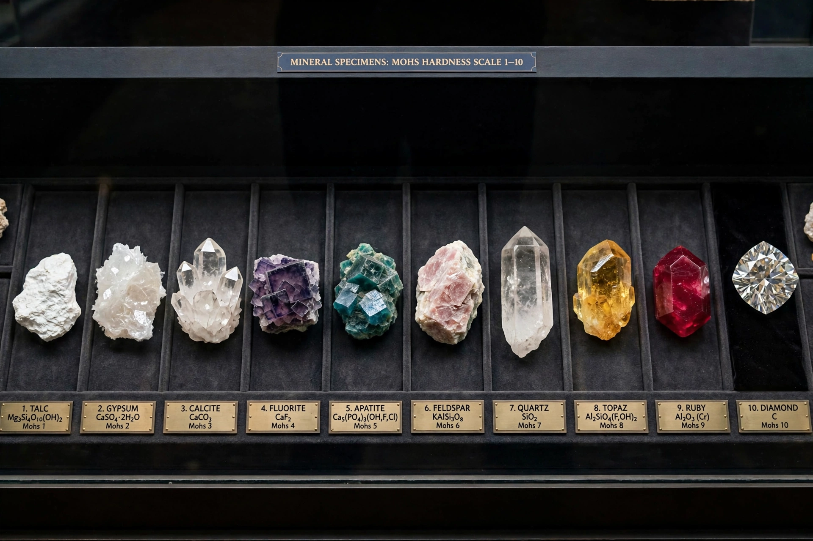

[Image placeholder: Reference minerals of the Mohs scale, from talc to diamond]The **Mohs scale of mineral hardness** is a qualitative ordinal scale, from 1 to 10, characterising the scratch resistance of minerals through the ability of harder material to scratch softer material. It was proposed by the German geologist Friedrich Mohs in 1812 and remains a standard field test in mineralogy and gemology.
On the scale, talc is 1 and diamond is 10. The scale is not linear: in absolute hardness, diamond (10) is about four times harder than corundum (9), while corundum is roughly twice as hard as topaz (8).
Common objects provide reference points: a fingernail about 2.5, a copper coin about 3, a steel nail about 5.5, and a steel file about 6.5. Some minerals fall between the integer steps.
Geologists use scratch tests as a quick identification aid, and the scale is widely used for gemstones — diamond's 10 rating underpins its role in cutting tools and abrasives. Because the Mohs scale is ordinal and uneven, engineers often prefer indentation tests such as the Vickers or Knoop hardness tests for quantitative measurement.